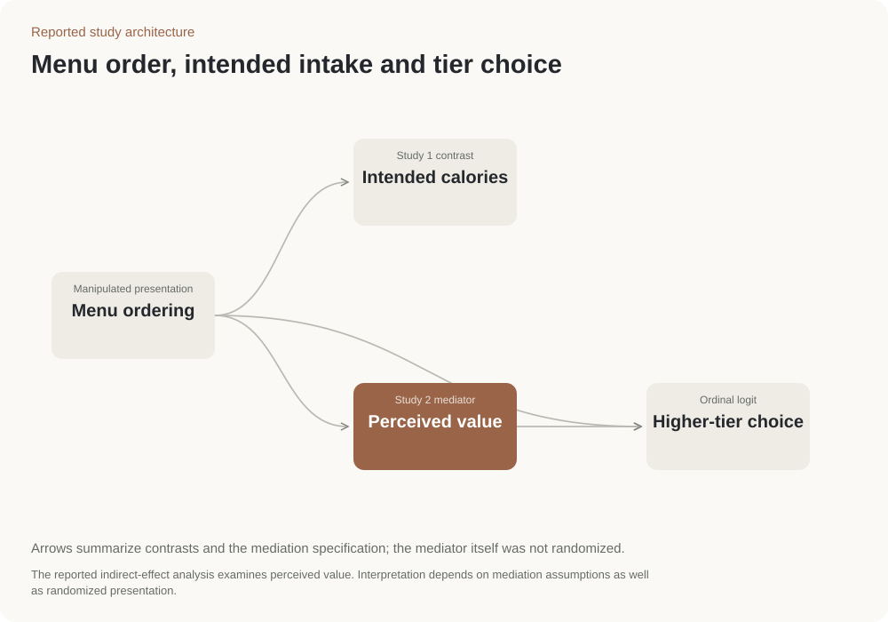

Lựa chọn thực đơn buffet
Hai thí nghiệm tìm hiểu cách thứ tự trình bày thực đơn liên hệ với lượng calo dự định ăn, giá trị cảm nhận và lựa chọn gói buffet giá cao hơn.
1,573→1,427kcal
1,668→1,445kcal
Đối chứng → Món lành mạnh xuất hiện trước
Lượng năng lượng dự định trung bình. Nghiên cứu không đo lượng thực phẩm đã ăn.
- Nghiên cứu 1
- 257 người trả lời
- Nghiên cứu 2
- 147 người trả lời
- Thiết kế
- Thử nghiệm thứ tự thực đơn
Đặt món lành mạnh lên trước
Lựa chọn gói cao cấp giảm từ 52.4% xuống 23.8%.
Thay đổi thứ tự món ăn hoặc gói giá, rồi so sánh lượng ăn dự định và lựa chọn gói giá cao hơn.
Đặt món lành mạnh trước làm thay đổi lựa chọn.
Lượng calo dự định · lựa chọn gói cao cấp.
Lượng ăn dự định
Nghiên cứu 1 · n = 257
-146 kcal · lượng ăn dự định
Nghiên cứu 2 · n = 147
-223 kcal · lượng ăn dự định
Lượng ăn dự định
Chênh lệch được báo cáo là 146 kcal ở Nghiên cứu 1 và 223 kcal ở Nghiên cứu 2. Thử nghiệm tại nhà hàng cần quan sát lượng ăn hay thức ăn thừa thực tế.
Chọn gói cao cấp
Tỷ lệ chọn gói cao cấp
OR = 0.52 trong mô hình thứ bậc riêng
Chọn gói cao cấp
Tỷ lệ chọn giảm từ 52.4% xuống 23.8%, chênh 28.6 điểm phần trăm. Mô hình thứ bậc riêng báo cáo OR = 0.52.
Hình dùng trong thí nghiệm


Tài liệu dự án: Nghiên cứu 1 n = 257; Nghiên cứu 2 n = 147; phân tích logit thứ bậc và vai trò trung gian.
Gợi ý thử nghiệm cho nhà hàng
Thử thay thứ tự thực đơn, đồng thời theo dõi lựa chọn món và nhu cầu gói giá cao; hai mục tiêu có thể đánh đổi với nhau.
Cách thực hiện nghiên cứu
Thiết kế thí nghiệm · Logit thứ bậc · Phân tích trung gian
Thay đổi thứ tự
Trình bày món ăn hoặc các gói giá theo thứ tự khác nhau.
So sánh các lựa chọn
Mô hình logit thứ tự kiểm tra việc lựa chọn các bậc giá cao hơn trong Nghiên cứu 2.
Kiểm tra giá trị cảm nhận
Phân tích xem cảm nhận về giá trị có giúp giải thích lựa chọn không. Tác động gián tiếp được báo cáo là −0.339, CI [−0.56, −0.15].
Sơ đồ nghiên cứu

Nguồn và trạng thái
Hai nghiên cứu thực nghiệm